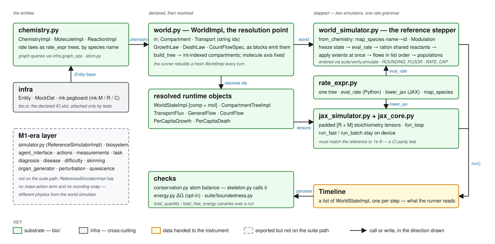

:>> ABIO → ABIO Architecture → ABIO-Bio-Engine
ABIO-Bio-Engine¶
A deterministic alien-chemistry integrator: a wrong number here corrupts every trial silently, which is why it is scanned first.

A world is authored declaratively: the suite's blocks emit string-id Compartment, Transport, GrowthLaw/DeathLaw/CountFlowSpec records plus a ChemistryImpl whose rate laws are rate_expr trees keyed by species name. WorldImpl.__init__ is the single resolution point: build_tree flattens compartments into an int-indexed CompartmentTreeImpl, a self-describing WorldStateImpl is derived from each compartment's concentrations, multiplicity and volume, and every string-id spec is rewritten into int-indexed TransportFlux, PerCapitaGrowth/Death and CountFlow objects. suite/verify.simulate then calls WorldSimulatorImpl.from_chemistry, where map_species re-keys rate laws name→id and modifiers become Modulations. Each reference step computes every reaction's desired extent from the frozen start-of-step state, rations shared reactants by single-pass min-ratio scaling, applies extents simultaneously, then the flow pass, then the population pass — each computing desire off the frozen state, rationing the summed demand per pool and applying at once (T053). The JAX path rebuilds the same reactions as padded tensors, lowers each law through lower_jax, and runs the algebraically identical rationing on device; parity to 1e-9 is a CI test. Either way the output is a Timeline of WorldStateImpl copies, and the runner rebuilds a fresh WorldImpl from the prior end-state every turn.
Modules¶
| MODULE | LOC | Role |
|---|---|---|
chemistry.py · molecule.py · reaction.py · atom.py |
336 · 193 · 383 · 118 | The entities: ChemistryImpl (bipartite graph queries via infra.graph_ops), MoleculeImpl (atoms, Hill symbol), ReactionImpl + Modulation, AtomImpl. |
world.py |
422 | WorldImpl, Compartment, Transport, the law specs, build_tree — the resolution point. |
world_state.py · compartment_tree.py |
343 · 195 | Dense [comp × mol] store with amount = multiplicity·volume·concentration; int-indexed parent/child topology. |
flow.py · population.py |
501 · 544 | TransportFlux (amount-conserving), GeneralFlow, apply_flows (the flow pass); PerCapitaGrowth, PerCapitaDeath, CountFlow on the multiplicity axis and apply_population_laws (the population pass). Both passes ration the summed demand on each pool off the frozen state, as the reaction pass does (T053). |
world_simulator.py |
534 | The reference stepper: WorldSimulatorImpl, ReactionSpec, _desired_extent, _modulation_factor, subnormal flush. |
rate_expr.py |
270 | One compiled rate-law tree: eval_rate, lower_jax, map_species, implicit_mass_action, to_json/from_json; the one home of ROUNDING_FLOOR and RATE_CAP (a divisor below the floor is zero on both backends). |
jax_core.py · jax_simulator.py |
325 · 268 | Padded stoichiometry tensors, apply_reactions, make_run_fn; JaxWorldSimulator with run_fast/run_batch (population laws run host-side in step; run_fast/run_batch refuse them). |
conservation.py · energy.py |
158 · 145 | Static atom balance (called by skeleton.py), opt-in ΔG accounting, the total_quantity/total_free_energy canaries. |
makers.py · __init__.py |
78 · 117 | Registers mk.M/R/C; the public re-export surface and the bio.io slot. The M1 layer this table used to list — simulator.py/biosystem.py/state.py, equilibrium/perturbation/quiescence, the agent/task modules, MembraneFlow — was deleted in T056 (2026-09-10). |
Only four packages are imported: protocols.bio, infra.entity/graph_ops/mk, spec_lang.decorators; jax and numpy are optional and guarded. Inbound: 32 suite files, nothing from expr/ or commands/. Most-imported symbols: WorldImpl (22 sites), WorldStateImpl (11), ChemistryImpl (11, three of them pulling the private _mock_dat).
Where a wrong number would be silent¶
Hypotheses for the latent-bug pass (T051 box 4); each names a constructed input.
| HYPOTHESIS | Why it would be quiet | Where |
|---|---|---|
MembraneFlow.apply transports nothing |
the stoichiometry loop body is pass; the class is still exported |
flow.py ~255 |
The JAX path drops population laws and TransportFlux |
JaxWorldSimulator.__init__ accepts only reactions, GeneralFlow and native flows; a world with either runs a different trajectory with no warning |
jax_simulator.py ~54–73 |
| Two death laws drive multiplicity negative | each law clamps against the frozen count independently, the stepper sums them without a floor; amount() and the conservation canary flip sign |
population.py ~329, ~431; world_simulator.py ~261 |
| Flows are sequential and unrationed | list order decides which of a forward/reverse pair sees the pre-transfer pool; the JAX apply_native_flows has no availability clamp and runs after the negative snap |
world_simulator.py ~229; jax_core.py ~284–306 |
| Constants duplicated across backends | ROUNDING_FLOOR/RATE_CAP re-declared as literals in jax_core; subnormal flush on the reference path only; lower_jax assumes map_species already ran |
jax_core.py ~118, ~195; world_simulator.py ~35 |
| Autocatalytic species and negative-base powers | JAX collapses to P − R in one matmul, the reference subtracts (with a snap) then adds; a**b on a negative base raises in CPython and yields NaN→0 in JAX |
jax_core.py ~231; world_simulator.py ~406–418; rate_expr.py ~134, ~175 |
ReferenceSimulatorImpl is a different physics |
no mass-action term, no rounding snap; any parity test that pairs it with the world simulator compares two models | simulator.py ~131–173 |